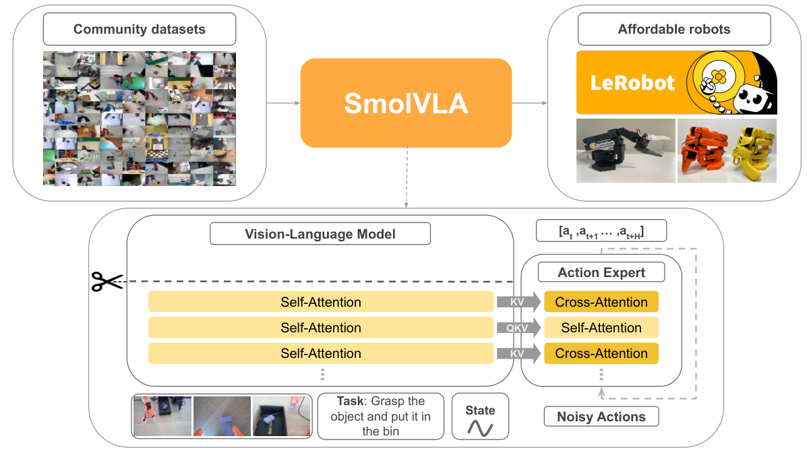
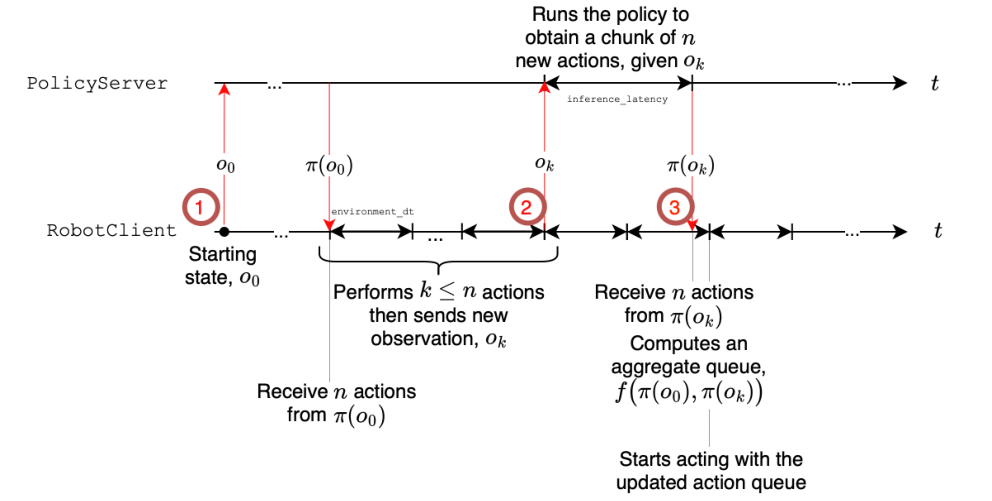

2025 · HUGGING FACE · LEROBOT 生态
SmolVLA 精读
1. 问题：小模型能否支撑可复现的真机研究？
SmolVLA同时考虑参数、公开数据和执行系统：以SmolVLM2为感知/语义主干，用flow matching专家产生动作，并在LeRobot中提供训练与异步执行。常用配置约450M。消费级设备可用是可复现性目标，不代表任意GPU、batch或相机数都能达到同一训练成本与控制率。
2. 架构精读
2.1 VLM前缀与交错注意力动作专家
图像、语言与投影后的机器人状态进入VLM前缀，动作专家以其特征为条件。专家交替使用读前缀的cross-attention和动作token间的causal self-attention，而不是把π0的注意力结构原样缩小。用 $A_t=(a_t,\ldots,a_{t+n-1})$ 表示n个动作，避免把两端都包含的下标误数成n+1；论文常用chunk配置为50步。

来源：SmolVLA 官方博客 Figure 2 · © Hugging Face / SmolVLA authors
2.2 效率设计不是免费的性能保证
模型保留VLM较早的部分层，并减少视觉token等开销。这是训练/模型配置上的截断，不是部署时可随意跳过任意已训练层。消融结果支持作者所测配置，但不能推广成“深度普遍冗余”或“跳层等同宽度缩减”。动作专家容量、状态放置和训练目标都有独立消融，比较时还应固定参数与训练预算。
2.3 社区数据标准化的实际含义
论文预训练采用481份社区数据集、约22.9K episodes和10.6M帧。工作包括清理任务标注、规范相机视角类别和数据接口；视角类别规范不等于统一了所有机器人相机的内外参。模拟基准的从VLM初始化实验、社区机器人预训练与真机任务微调，是需要区分的训练设置。
3. 异步推理栈：等待发生在哪里？
初始队列仍需等待第一块。之后按队列阈值请求新动作，在旧队列执行时并行推理；新块返回后，根据已经流逝的执行时间对齐、丢弃过期前缀并更新/聚合队列。不能把新块直接完整追加到末尾，否则动作可能对应旧观测。队列阈值太迟会耗尽，太早也可能增加无效推理；网络抖动和超时需要单独处理。

来源：SmolVLA 论文 Figure 2 · © Shukor et al.
来源：SmolVLA 官方博客 Figure 1 · © Hugging Face / SmolVLA authors · 原始文件
官方 GIF 等时长转码为 H.264；仅为偶数尺寸补边，不改播放速度或帧顺序。
点击播放，可暂停、拖动进度或全屏；本站不自动播放，也不额外加速。
4. 结果：修正基准与列名，保留实验条件
下表仅摘录论文v1 Table 2的LIBERO设置，列为Spatial / Object / Goal / Long。此处“机器人预训练”不是“是否异步”；SmolVLA这一组从VLM初始化，因此表中No也不意味着论文没有社区预训练模型。不同论文、后续checkpoint与异步真机实验不能拼成一个排行榜。
| LIBERO · 论文Table 2 | 机器人预训练 | Spatial | Object | Goal | Long | 平均(%) |
|---|---|---|---|---|---|---|
| π0 · VLM初始化 | 否 | 87 | 63 | 89 | 48 | 71.8 |
| π0 · 机器人预训练 | 是 | 90 | 86 | 95 | 73 | 86.0 |
| SmolVLA · 0.45B | 否 | 90 | 96 | 92 | 71 | 87.3 |
异步系统另见论文Figure 5：Pick-Place计时实验的平均完成用时为13.75s → 9.70s，减少约29.5%；固定时间实验平均完成方块数为1.8 → 3.8。三项真机任务的平均成功指标则为78.3 → 73.3。更快不等于每项任务更准，“约2×吞吐”也不是模型前向本身快了2×。
5. 研究者注记
若研究运行时加速，至少同时记录模型耗时、观测年龄、队列长度、实际执行动作和任务结果。若研究小型化，分别消融VLM保留层、视觉token与专家宽度；若研究泛化，区分预训练与任务微调的数据。不要把“CPU能运行”与满足真机控制截止期划等号。
6. 交错注意力：小模型的条件接口怎么工作
把VLM产生的前缀特征记为 $C$，带噪动作隐藏向量记为 $X$。cross-attention可简写为 $\operatorname{softmax}(Q_XK_C^\top/\sqrt d)V_C$：query来自动作，key/value来自前缀。self-attention则把key/value也换成动作特征，并加上动作位置的causal mask。两者分别承担“读取条件”与“协调块内动作”的角色。
causal attention不自动意味着逐动作自回归解码。这里每一步flow迭代仍可以并行更新整个动作张量，只是第 $j$ 个位置在该层不能读取比它靠后的动作位置。把mask的因果性和生成算法的串行性分开，是理解SmolVLA与离散token VLA的关键。
前缀包含状态，因此“状态只进入动作专家”的π0表述不能直接搬到SmolVLA。视觉token减少、保留VLM的层数、专家宽度和采样次数，是四个不同的成本旋钮。它们都可能改变性能，不宜压成单一的“模型只有450M，所以很快”。
公式方向也要与代码配套。这里核对的 LeRobot 9f45b7b · SmolVLA实现 使用 NOISE_AT_ONE 约定：$x_s=s\epsilon+(1-s)A$，目标 $u=\epsilon-A$，从1向0积分。不同文档的时间变量名称相同，并不保证端点定义相同。
7. 从社区预训练到部署：分别管理三类预算
数据预算
预训练、目标任务微调和测试集分别记录episode数量、任务、相机与控制模式。社区数据格式统一后，仍应检查任务语言、动作频率、单位、机器人标定和质量。若测试集包含相同采集session的近重复场景，不能仅靠episode ID不同就断言完全独立。
计算预算
同一观测先经过视觉/语言/状态前缀，再用这些特征做多步动作生成。减少前缀token或模型层数主要影响编码；减少flow步数主要影响专家迭代。测速应在相同相机数、图像输入、精度、batch与设备上进行，并区分冷启动、编译后稳态与远程往返。
显存预算：参数字节数只是下限
教学估算： 450M参数若每个权重占2字节，仅权重约0.90GB（十进制）；这不含激活、缓存、运行时工作区、梯度和优化器状态。能容纳权重不等于能以指定batch训练，更不等于满足真机控制时限。比较“消费级可用”时，应给出实际峰值内存和端到端性能，而非只报参数数。
8. 教学算例：240ms延迟后，50步动作还剩哪一段？
| 相对时间 | 客户端正在做什么 | 服务端 / 新块状态 |
|---|---|---|
| 0ms | 发送新观测；继续执行旧队列 | 新块的动作索引以这次请求为基准 |
| 0–240ms | 消耗旧动作，不因请求立即停住 | 预处理、推理与传输都计入延迟 |
| 240ms返回 | 读取当前实际执行计数 | 对齐时间/索引，丢弃过期部分 |
| 返回之后 | 按协议替换或聚合未来重叠区 | 不是把整块当作“此刻才开始”的50步 |
若触发请求时旧队列剩16项，它可覆盖约320ms；相对240ms延迟只有约80ms、即4项余量。网络尾延迟一旦超过余量仍可能队列耗尽。一个粗略设计条件是 $q_{\rm trigger}\ge\lceil fL_{p99}\rceil+m$，$m$ 是额外余量；这只是排队预算，不是安全或稳定性证明。
真实系统还存在相机采集时间、请求排队、执行器抖动和不同动作语义。应优先使用统一时钟下的时间戳和实际执行索引，不只按“平均延迟×频率”截断。位置与增量动作的重叠聚合也不能无条件共用同一规则。论文算法把聚合写成抽象函数，具体实现需检查所用版本。
9. 异步控制循环：并行之外还有哪些状态
- 启动： 第一块尚未到达时没有旧动作可消费，初始化等待不可省略。
- 消费： 低层循环按既定时钟取出动作，记录实际执行序号与时间；RPC线程不直接改写已执行的动作。
- 触发： 队列低于阈值且服务端可接受新请求时，捕获新观测；明确是否只允许一个在途请求。
- 接收： 按请求ID和观测时间处理返回，拒绝不该覆盖更新结果的过期响应；只更新未来动作。
- 异常： 对超时、断链、队列耗尽使用事先验证的系统级回退/停止协议。异步策略本身不提供这些保证。
当对象突然移动，下一次有效新观测及其返回结果才会改变策略条件；一直消费旧动作并不算“立即响应”。阈值更早可以提供延迟余量，也会改变观测年龄、请求频率和资源占用，必须结合具体流水线测试。异步栈首先是运行时设计，不是一次额外的模型训练。
10. 研究建议：公平比较同步、异步与小型化
| 比较 | 保持不变 | 同时报告 |
|---|---|---|
| 同步 / 异步 | checkpoint、生成步数、设备、初始场景 | 成功率、任务用时、观测年龄、空队列次数 |
| 本地 / 远端 | 尽量对齐策略与执行接口 | 网络往返、服务端排队、p99时延与断链处理 |
| 保留层数 / token数 | 训练预算、数据、控制协议 | 精度、峰值显存、前缀/专家分项耗时 |
| 预训练 / 从VLM初始化 | 目标任务数据与微调评测协议 | 预训练数据来源，不能把这列改名“是否异步” |
看官方四联动图时，先暂停辨认每个面板的实验条件，再观察等待间隙与扰动响应。该片段适合找行为现象，不适合直接把像素运动速度换算成论文的成功率、任务吞吐或GPU加速比。
复现的最小日志应同时能回答：这条动作来自哪个观测、哪个请求、哪个chunk位置，真正执行于何时？如果只有推理开始/结束时间，就很难定位异步系统中的陈旧动作与队列错误。
11. 前缀缓存逐步阅读：为什么要清掉上一轮动作K/V
在一次动作块生成中，图像、语言与状态前缀固定，带噪动作随flow积分改变。先计算前缀的K/V，再让动作专家在各生成时间读取，可以避免重复编码条件。这里的“过去”有两种：真实观察历史，以及上一轮生成迭代；后者通常不能自动作为新的序列上下文保留下来。
来源：SmolVLA 官方博客 Figure 2 · © Hugging Face / SmolVLA authors。沿用原文件，未重绘。
如果self-attention在处理suffix时向缓存追加动作K/V，下一轮带噪动作已经改变，旧suffix就不再代表同一个生成状态。错误地继续追加，会让缓存长度随积分步增长，并让模型读到本不该出现的旧迭代动作。固定版本 denoise_step 显式把缓存裁回前缀长度，正是需要关注的实现细节。
怎样验证缓存真的等价？
固定同一输入、噪声、时间与精度，比较不复用缓存的完整计算和缓存路径输出；再连续做多轮生成，检查缓存长度不意外增长。允许低精度带来的合理容差，但不应出现随迭代累积的明显偏差。只在第一轮比较一致，无法排除后续suffix残留。
到了下一次物理观察，前缀已经变了；若继续无条件复用旧K/V，单次推理可以很快，却失去对新场景的反馈。这是缓存边界错误，不应把相应速度写成有效闭环加速。缓存正确性和缓存收益必须同时验证。
12. 注意力成本怎么算：交错结构的收益不能只看一个平方
记前缀token数为 $P$、动作token数为 $H$。动作对前缀的cross-attention分数矩阵约有 $HP$ 个位置，动作self-attention约有 $H^2$ 个位置；把全部位置放进一个普通稠密自注意力块则有 $(P+H)^2$ 个位置。这个计数帮助理解条件读取与块内协调的不同成本，但还没有包含投影、MLP、head数和层数。
causal动作mask逻辑上只保留三角可见关系，50个位置包含对角线时有1275个有效对。但如果内核仍先计算稠密矩阵再mask，算力并没有自动减半；只有具体内核利用了稀疏性，才可能把逻辑稀疏转为对应计算节省。
前缀K/V投影是否可缓存、cross与self如何交错、专家隐藏宽度多大，都影响真实耗时。相比理论attention项数，MLP可能占据更大开销；小batch下内核启动、显存访问和传输也可能主导。必须在相同输入与硬件上测分项延迟。
论文结构见 SmolVLA 3.1节。复现时记录视觉token数、保留层、专家宽度、flow步数与缓存设置，不只写“我们使用了更高效的attention”。若同时改这五项，就无法归因某个单独结构的收益。
13. 社区数据进入训练前：从文件统一到动作语义统一
社区数据统一成相同文件格式，解决的是存储和读取接口的一部分，不自动统一机器人标定、单位、控制模式与任务质量。尤其要分清传感器测得的实际关节状态、控制器接收的目标值，以及人类遥操作设备的指令；三个数组可能维数相同，物理含义却不同。
| 层面 | 最低限度审计 | 常见误判 |
|---|---|---|
| 时间 | 原始频率、丢帧、相机/状态/动作对齐 | 把文件行号当成同步物理时刻 |
| 控制 | 绝对/增量、关节/末端、夹爪定义 | 形状一致就直接混训 |
| 视觉 | 相机视角类别、处理后图像与缺失mask | “前视”标签相同就意味着标定相同 |
| 语言 | 任务描述与实际行为是否一致 | 自动改写越详细就一定越准确 |
重采样要与动作语义一起做。一个关节绝对目标可以按适当规则插值，而逐步增量需要保证累计量与物理时间一致；夹爪离散切换也不一定适合线性插值。复制视频帧以达到更高标称帧率，不会增加新的真实观察信息。
如果某份数据记录的是命令而非真实状态，模型可能学到控制器迟滞或操作员习惯；如果测试机器人动力学不同，这种迁移不应简单称为语义泛化失败。先审计这些接口，再讨论社区预训练规模的收益。
研究交付至少保存源数据版本、转换规则、字段schema与少量可视化回放。这样别人不仅能读到同一文件，还能解释同一个数值在训练和部署中到底代表什么。
14. 状态token是否真的被使用：从连通检查到因果对照
SmolVLA把投影后的机器人状态接入前缀，意味着模型可以同时利用视觉与本体感觉。但“接口里有state”不证明策略已经有效利用它，也不证明相机信息可以被完全替代。若状态与动作时刻有固定偏移，网络可能学到错误的动态关联。
先做最小连通检查：固定图像和指令，改变一个有效状态维，观察前缀表示、输出及相应梯度是否变化。完全没有变化可能提示mask或投影错误；有变化也只说明通路存在，尚不能证明模型把状态用在正确物理维上。
更有解释力的三组评测
- 正常、缺视觉和缺状态分别测，明确这些缺失是否属于训练支持范围；不把任意异常输入当公平基线。
- 在相近图像下改变机器人真实姿态，用同步状态评价动作是否随当前构型调整；优先仿真或离线数据。
- 对状态施加已知时间偏移，观察误差随偏移变化，区分信息作用与时序错误。
视觉与状态可能有冗余：一只机械臂的大姿态既能被相机看到，也能被关节编码器描述。去掉一种输入后成绩不变，不一定证明这条路径完全没被使用；另一条路径可能补上信息。反事实设计必须让待测信息真正决定正确动作。
原始状态、归一化状态、有效维mask和图像时间戳应一起记录。把上一时刻状态配到当前图像的错误，往往比“状态维度没有填满”更隐蔽，因为所有张量都能顺利通过网络。
15. 异步请求状态机：乱序返回时谁有权更新队列
异步不只有“发起请求”和“收到结果”两个状态。至少要管理启动、空闲、在途、可接收、过期、已应用与异常；每个响应应带上可追踪的请求ID、观察时间和动作起始索引。否则无法判断返回的是针对哪个过去状态的计划。
一种较简单设计是只允许一个在途请求；另一种允许多个请求，但必须有更严格的取消、版本与未来动作合并规则。这是系统选择，不是所有SmolVLA实现都自动具备同一行为。论文的聚合函数是抽象接口，不能把自己的并发策略写成作者算法的唯一实现。
| 事件 | 需要验证的性质 |
|---|---|
| 新观察发出 | 请求的观察/状态与索引属于同一一致快照 |
| 旧响应返回 | 不会覆盖已经确认更合适的新计划 |
| 队列被更新 | 已执行前缀不可回写，未来区间按协议原子更新 |
| 任务复位 | 旧任务在途响应不会污染新任务队列 |
复位可以引入episode级epoch，避免新旧任务请求ID相同造成混淆；这是工程研究建议。先用假时钟和可控返回顺序验证状态机，再接真实策略。客户端状态正确仍不证明神经网络动作正确，两层验证要分别完成。
16. 观察相似度过滤：省掉一次推理，也可能漏掉关键变化
论文异步算法的 NeedsProcessing 可以作为观察处理触发接口；具体过滤规则会改变调用量和反馈新鲜度。像素接近或特征余弦接近，不必然代表控制上等价：夹爪已经碰到物体、接触力发生变化，画面可能几乎没变；反过来曝光变化很大，正确动作却可能不变。
因此过滤器的目标不应只写“减少相似帧”。更精确的问题是：在满足任务效果与响应要求时，哪些观察可以不触发新生成？应记录被跳过的帧及状态，不能只保留发给服务端的请求，否则无法分析漏掉的信息。
可以怎样构造对照？
- 无过滤基线，保存每个候选观察与完整动作/时间日志。
- 同一过滤器扫描阈值，报告实际调用数、观察年龄、任务成功和扰动恢复。
- 构造视觉变化小但任务状态改变，以及视觉变化大但状态基本不变的两类场景。
- 考虑把本体状态变化纳入触发，但不要未经评测就声称融合状态后一定安全。
如果阈值只在一个任务上调得很好，迁移到细小接触任务时可能失效。照明、纹理与相机压缩也会影响图像距离，特征距离还受编码器版本影响；阈值应与所用模型和观察处理一起版本化。
这里将 论文3.3节的触发接口 展开为待验证的研究变量。过滤节省的是某些调用，不是把单次模型forward本身变快；若因此错过关键反馈，吞吐或平均延迟的改善可能掩盖任务可靠性下降。
17. 动作块接续：替换、平均与增量动作为什么不同
新块返回后，最简单的想法是替换未来动作；另一种做法对重叠区作加权聚合。替换可以更快采用新反馈，却可能产生目标跳变；聚合可以平滑目标，却可能把新观察带来的必要纠正稀释。哪一种更合适取决于动作语义、控制器和观察陈旧度，而不是只看曲线是否平滑。
若重叠动作是同一坐标系下的绝对关节目标，某些平均操作至少有明确的数值含义；但旋转表示、夹爪离散状态和逐步增量并不都适合逐元素平均。对不同状态锚定的delta直接平均，还可能把两个不同绝对目标错误混合。
例如某块的delta相对旧状态，另一块相对新状态，即使两组增量数值很接近，它们对应的绝对目标也不同。应先根据各自契约解释目标，再决定如何对齐；详见 π0的相对动作算例。不能把“丢弃过期前缀”理解成其余动作自动拥有当前状态的语义。
把接续质量量化
可以记录切换边界的目标位置/速度跳变，以及真实执行的跟踪误差；如果使用差分计算加速度或jerk，要说明动作频率与滤波规则。很小的数值跳变并不保证接触过程正确，很平滑的错误目标仍然会失败。
公开代码后续可能包含额外动作块接续模块，不等于原始SmolVLA论文已经采用所有后续改进。实验应固定具体实现版本，分别说明队列重叠、时间对齐和生成过程约束，而不是把它们统称成“异步”。
18. 低精度和小模型部署：权重变小之后还要测什么
把权重从高精度改为低精度可能降低内存与带宽开销，但算子支持、缓存精度、激活和反量化都会影响收益。450M参数只描述模型规模，不保证某种量化方案在任意CPU/GPU上更快，更不能从权重字节数直接推导训练峰值显存。
连续动作对小误差的敏感性可能随通道与阶段变化。夹爪临界开合、精细对齐和接触切换的误差，不能只用整块平均MSE掩盖。少步flow又可能改变误差传播，因此量化与采样步数应分别评测，再看是否存在交互。
| 测试层 | 建议检查 |
|---|---|
| 数值一致性 | 固定输入、噪声和时间，对比各动作维与极值，不只看平均 |
| 运行时 | 实际峰值内存、冷启动/稳态、编码/专家/I/O与尾延迟 |
| 任务 | 对象选择、精细动作、接触失败和整任务成功分别统计 |
| 环境 | 相机数、图像大小、设备与库版本一致，明确是否远程服务 |
若校准数据只覆盖顺利主路径，低精度误差可能在恢复状态或罕见动作上更大。数据划分仍应避免测试泄漏；不能为了量化校准读取完整测试轨迹后，再把成绩称为未适配泛化。
这是一组部署研究建议，不是本站已完成的SmolVLA量化benchmark，也不声称当前官方模型支持任意低精度训练/推理组合。先确认具体实现与算子支持，再投入完整任务评测。
19. 异步压力测试：先用假服务端检验时间逻辑
神经网络输出变化会让并发bug难以定位。可以先让服务端返回带明确索引的合成动作块，用可控假时钟注入延迟、乱序和断链，只验证客户端对齐与队列状态。这里不需要驱动机器人；合成动作也不应直接接入真实执行器。
| 注入条件 | 应观察的状态 | 需要预先定义 |
|---|---|---|
| 长尾延迟突增 | 剩余队列与观察年龄 | 耗尽时的回退，而不是继续猜动作 |
| 响应乱序 | 请求/episode版本是否倒退 | 接受、丢弃与取消规则 |
| 相机重复帧或缺帧 | 是否被误当成新反馈 | 时间戳和缺失观察处理 |
| 任务中途复位 | 旧任务响应是否污染新队列 | epoch边界与在途请求清理 |
沿用50Hz教学频率，16项旧队列只覆盖约320ms；若一次端到端延迟变成400ms，平均延迟曾经低于阈值也不能阻止耗尽。余量应基于实测尾部与异常处理设计，但即使如此也不是确定性的安全保证。
压力测试输出建议包含队列时间线、每个响应的接受/拒绝原因和已执行索引。通过此测试只能说明状态逻辑符合设定，不说明合成动作具有物理可行性；之后仍需在正确策略与安全执行协议下评价任务。
把系统正确性测试与模型能力评测分离，往往能让后续失败更可解释，也避免用“模型偶尔不稳定”掩盖确定可复现的旧响应覆盖问题。
20. 可复现课题：异步收益来自减少空等，还是增加新观察
研究假设： 异步系统的收益可能同时来自计算/执行重叠和更频繁的新观察；只比较默认同步与默认异步，不能自动分离两者。需要控制调用预算与观察更新协议。
| 组别 | 目的 |
|---|---|
| 同步基线 | 记录等待间隙、完整执行窗口与真实调用数 |
| 异步、匹配调用预算 | 尽量隔离流水线重叠本身的作用 |
| 异步、提高反馈频率 | 测新增观察/生成调用的额外收益与成本 |
| 可控延迟压力组 | 检验结论是否只在低网络抖动下成立 |
所有组使用同一checkpoint、动作语义、控制频率与初始状态集合。记录成功率、单位墙钟时间完成数、观察年龄、调用总数、服务端计算和队列异常。不能一组使用更强GPU和更多调用，再把全部提升解释成异步调度算法。
如果只有无扰动任务用时缩短，证据可能主要支持减少空等；如果匹配预算时恢复能力也提高，才值得进一步分析反馈时序。若平均用时改善而失败率上升，应明确给出权衡，不能只保留吞吐指标。
这是待执行实验。交付物应让别人根据时间日志重建每条动作来自哪个观察、哪个请求和哪个chunk位置，既能复算吞吐，也能追查一次异常队列更新。